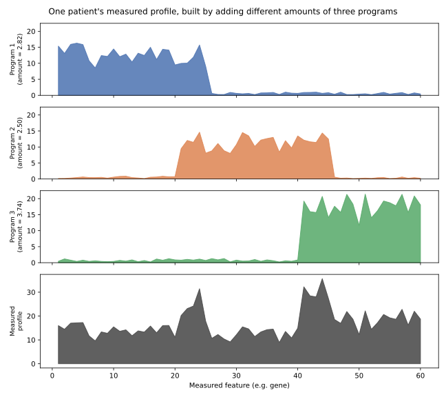
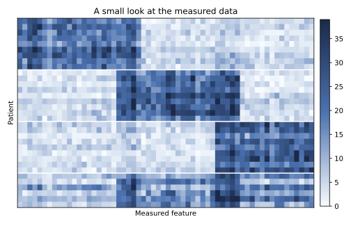
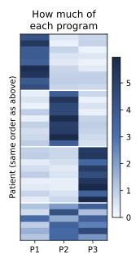
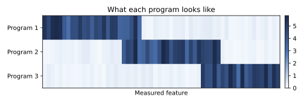
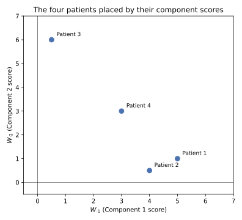
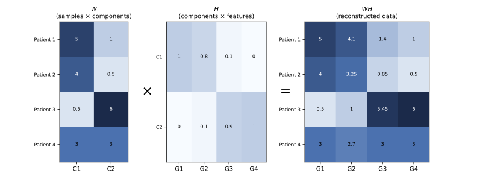
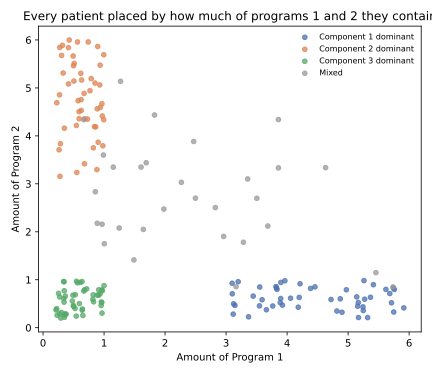
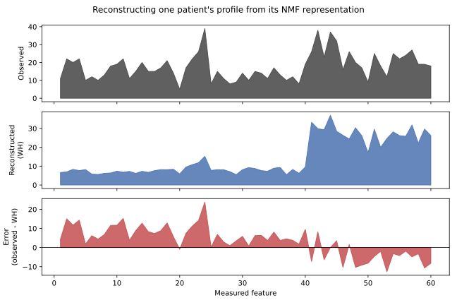
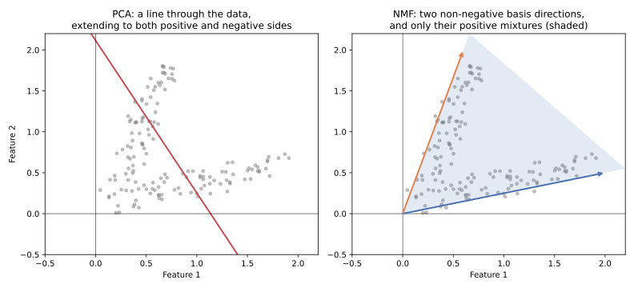

1 NMF
1.1 A dataset with more measurements than underlying processes
Suppose a hospital has measured the activity of thousands of genes in each of several hundred patients. Each row is a patient. Each column is a gene. Every value is non-negative: a gene is measured as expressed at some level, never at a negative level.
Thousands of genes do not mean thousands of independent biological processes. Many genes rise and fall together because they belong to a shared underlying program. A set of immune-related genes tends to go up together when immune activity increases. A set of proliferation-related genes tends to go up together when cells are dividing more. A patient’s full expression profile can often be described, reasonably well, as a combination of a much smaller number of such programs.
Imagine three such programs: immune activity, proliferation, and metabolic activity. A given patient might have a lot of immune activity, only a little proliferation, and a moderate amount of metabolic activity. Another patient might be the reverse. The measured genes are just the visible trace of these programs acting, in different amounts, in different patients.
1.2 One patient, built from three programs
To make this concrete, consider a simulated dataset: three underlying programs, each with its own characteristic pattern across a set of measured features, combined in different proportions for each patient. We will call them Program 1, 2 and 3 for now.

Figure 1.1 shows one patient. The top three panels are the three programs, each already scaled by how much of it this particular patient has: a large amount of Program 1, very little of Program 2, and a moderate amount of Program 3. The bottom panel is their sum, which is what actually gets measured. Nothing about the bottom panel directly reveals the three ingredients that produced it. Recovering them is the problem NMF is built to solve.
1.3 Two things learned at once
NMF is given only the measured data, the equivalent of the bottom panel in Figure 1.1, repeated across every patient. It does not know the three programs in advance, and it does not know how much of each program any particular patient has. It has to learn both at the same time:
- what the programs themselves look like, across all the measured features
- how much of each program is present in each patient
These two things get names. The programs’ patterns across features are collected into a matrix called H. How much of each program is present in each patient is collected into a matrix called W. Put in words, before any equation:
- H describes what each program looks like across the original measurements.
- W describes how much of each program is present in each sample.
1.4 Seeing W and H
A heatmap of the original data, a small heatmap of W, and a small heatmap of H, side by side, make this concrete.



Figure 1.3 and Figure 1.4 always mean the same thing in this course, and Program 1 in one is Program 1 in the other. Figure 1.2 is the only thing NMF ever sees. Figure 1.3 and Figure 1.4 are what it learns to produce.
1.5 Reading H and W
The heatmaps above show the idea at a glance. A small example, worked through completely, shows the mechanics: exactly how one row of H and one row of W combine into a measurement.
Suppose there are only four genes, \(G_1\), \(G_2\), \(G_3\), \(G_4\), and two components, with component profiles
\[ H= \begin{bmatrix} 1.0 & 0.8 & 0.1 & 0.0\\ 0.0 & 0.1 & 0.9 & 1.0 \end{bmatrix}. \]
Row 1 of \(H\) is \(H_1=[1.0,\ 0.8,\ 0.1,\ 0.0]\). Its large weights sit on \(G_1\) and \(G_2\), so those two genes are what define Component 1. Row 2 is \(H_2=[0.0,\ 0.1,\ 0.9,\ 1.0]\), with its large weights on \(G_3\) and \(G_4\).
Only now, having looked at which genes each row actually weights heavily, does it make sense to attach a biological label. If \(G_1\) and \(G_2\) happen to be immune-related genes, Component 1 could reasonably be called an immune-like program. If \(G_3\) and \(G_4\) are proliferation-related, Component 2 could be called a proliferation-like program. NMF itself never sees the words “immune” or “proliferation.” It only ever works with the numbers in \(H\). The biological label is something a person adds afterward, by inspecting which features came out on top, and it is only as good as that inspection.
Now four patients, each described by one row of W:
| Component 1 | Component 2 | |
|---|---|---|
| Patient 1 | 5 | 1 |
| Patient 2 | 4 | 0.5 |
| Patient 3 | 0.5 | 6 |
| Patient 4 | 3 | 3 |
Patient 1 has a large Component 1 score and a small Component 2 score. Patient 3 is the reverse. Patient 4 has a similar amount of both, and genuinely uses both components rather than being dominated by one.
Reconstructing Patient 1’s profile means taking 5 parts of \(H_1\) and 1 part of \(H_2\) and adding them:
\[ \hat x_1 \approx 5H_1+1H_2. \]
\[ 5H_1=[5.0,\ 4.0,\ 0.5,\ 0.0],\qquad 1H_2=[0.0,\ 0.1,\ 0.9,\ 1.0], \]
\[ \hat x_1=[5.0,\ 4.1,\ 1.4,\ 1.0]. \]
Patient 1 ends up with high reconstructed values at \(G_1\) and \(G_2\) for a simple reason: this patient has a large Component 1 score, and \(G_1\), \(G_2\) are exactly the genes Component 1 weights heavily. High expression at those two genes is not a separate fact about the patient needing its own explanation. It follows directly from one number, 5, multiplying the row of \(H\) that already favours those genes.
Patient 3 works the same way, with the two components’ importance reversed:
\[ \hat x_3 \approx 0.5H_1+6H_2 = [0.5,\ 1.0,\ 5.45,\ 6.0]. \]
\(G_3\) and \(G_4\) dominate this patient’s reconstructed profile, because Patient 3’s large score sits on Component 2, and Component 2 is the row of \(H\) that weights \(G_3\) and \(G_4\) heavily.
Three relationships are worth keeping, stated in general rather than just for this example:
\[ \boxed{H_{rj}=\text{how strongly feature }j\text{ belongs to component }r} \]
\[ \boxed{W_{ir}=\text{the coefficient used for component }r\text{ when reconstructing sample }i} \]
\[ \boxed{\hat X_{ij}=\sum_r W_{ir}H_{rj}} \]
1.5.1 A caution about comparing raw W values
It is tempting to look at Patient 1’s row, \(W_1=[5,1]\), and conclude that this patient has five times more of Component 1 than Component 2. That conclusion does not follow, and the reason matters.
The scale of a column of \(W\) depends entirely on the scale of the matching row of \(H\). Suppose, hypothetically, a fit produced the same scores \(W_i=[5,1]\), but with
\[ H_1=[1,1,1],\qquad H_2=[100,100,100]. \]
Component 1’s contribution to this sample would then be \(5H_1=[5,5,5]\), while Component 2’s contribution is \(1H_2=[100,100,100]\), twenty times larger, despite Component 2 having the smaller \(W\) score of the two. The actual contribution of component \(r\) to sample \(i\) is
\[ \boxed{W_{ir}H_{r\cdot},} \]
the score and the profile together, never the score alone.
This is a preview of something the mathematics chapter derives properly. Multiplying every entry of one column of \(W\) by a positive constant and dividing the matching row of \(H\) by the same constant leaves \(WH\) completely unchanged,
\[ WH=(WD)(D^{-1}H). \]
Raw \(W\) values are only informative relative to the scale of their matching row of \(H\). If every row of \(H\) has been normalized to a comparable scale, comparing \(W\) scores across components becomes reasonable. Otherwise, avoid saying “this sample has more of Component 1 than Component 2” from the raw \(W\) values alone.
1.5.2 Reading an NMF score plot
The four patients’ scores can be placed directly on a two-dimensional plot, \(x=W_{\cdot1}\) against \(y=W_{\cdot2}\).

In Figure 1.5, Patients 1 and 2 sit toward the right, where Component 1 is large. Patient 3 sits toward the top, where Component 2 is large. Patient 4 sits between the two, matching its balanced score. If Component 1 has already been read from \(H\) as an immune-like program, a patient further to the right can reasonably be described as having a stronger score on that program, provided the axes are on a comparable scale to begin with.
It is worth being precise about how this differs from a PCA plot, even though both are two-dimensional scatter plots of scores. Separation along PC1 means separation along the direction in the original feature space that captures the most variance. Separation along \(W_{\cdot1}\) means separation in the coefficient attached to one specific, non-negative, learned component. Nothing here has been optimized to capture variance, and \(W_{\cdot1}\) is not “the most important” NMF component. Component numbers are arbitrary labels, not a ranking.
1.5.3 Reading features from H
Ranking one row of \(H\) from largest to smallest weight is the most basic form of feature interpretation available in NMF. For Component 1,
\[ G_1=1.0,\quad G_2=0.8,\quad G_3=0.1,\quad G_4=0.0, \]
so \(G_1\) and \(G_2\) are its two defining features.
A large weight is not quite the same thing as a feature that is specific to one component. Compare two hypothetical genes, each shown as its own two-component row of \(H\):
\[ \text{Gene A}=[0.9,\ 0.05],\qquad \text{Gene B}=[0.9,\ 0.85]. \]
Gene A has a high weight in Component 1 and a low weight in Component 2. It is specific to Component 1, and a good candidate for defining what that component means. Gene B has a comparably high weight in both components. It contributes to the reconstruction either way, but it does little to distinguish one component from the other.
It would be a mistake to treat this ranking as automatic variable selection. Ordinary NMF is free to give many features a modest positive weight in more than one component, the way Gene B does here, and it will not zero any of them out on its own. Sparsity, where most weights in a row of \(H\) are pushed to exactly zero, is something specific methods such as sparse NMF, or an added regularization penalty, aim for deliberately. It is not a property ordinary NMF is guaranteed to have.
1.5.4 Putting it together

Figure 1.6 is the whole example in one picture. \(H\) defines what each component looks like across the four genes. \(W\) gives each patient’s coefficient for each component. Multiplying a patient’s row of \(W\) by the matching row of \(H\), one component at a time, and adding the results, is exactly the arithmetic worked through above. Applied to every patient and every gene at once, that same arithmetic is \(WH\), the reconstructed data this chapter has been building toward.
1.6 Dimensionality reduction
A patient in Figure 1.2 is described by every measured feature, potentially thousands of numbers. After NMF, that same patient can be described by just three numbers: how much of Program 1, how much of Program 2, how much of Program 3. That row of three numbers is the corresponding row of W. This is what “dimensionality reduction” means here: a long, detailed measurement is replaced by a short, structured summary.
Because that summary only has three numbers per patient in this example, two of them can be plotted directly against each other.

This is the same plot as Figure 1.5, at the scale of hundreds of patients and thousands of genes rather than four patients and four genes. Moving to the right in Figure 1.7 means containing more of Program 1. Moving up means containing more of Program 2. A patient near the origin of both axes is not “low” in some absolute sense. It only means low on these two particular programs. Such a patient could still score high on Program 3, which is not shown in this two-dimensional view. And as already seen in the example, nothing about the order in which components are numbered corresponds to how much of the data they explain: Program 1 is not automatically bigger, stronger, or more informative than Program 3.
1.7 What NMF preserves
It helps to be precise about what NMF is actually optimizing for, in words, before any equation appears. NMF is primarily trying to keep enough information in W and H that multiplying them back together reproduces the original measurements reasonably well.
It is not explicitly trying to keep pairs of similar patients close together. It is not explicitly trying to preserve who each patient’s nearest neighbours are. It is not maximizing variance the way some other methods do. The reduced scores in W are useful because, combined with the learned programs in H, they can reconstruct something close to the original data.

Figure 1.8 shows one patient’s observed profile, what an NMF fit reconstructs for that patient from its three-number summary and the learned programs, and the difference between the two. The reconstruction does not match the observation exactly. It is close enough that the leftover difference has no obvious structure of its own, which is the practical sense in which the three-number summary “worked”: it kept what mattered for rebuilding the measurement, at the cost of some fine detail.
1.8 Comparison with PCA
PCA is the more familiar dimensionality reduction method, and the comparison is worth making carefully. PCA is often the better default choice when the goal is efficient dimensionality reduction, a quick visualization, or finding the directions along which a dataset varies the most. It has no restriction on sign: its scores and its loadings can both be positive or negative.
NMF gives up that flexibility on purpose. Every score in W and every entry in H must be non-negative. This matters when negative amounts would not make sense for the data being described. A tissue sample can plausibly contain a large amount of one molecular signature and a small amount of another, but it cannot contain a negative amount of either. A patient cannot have negative immune activity. Where quantities are genuinely non-negative and additive, forcing the model to respect that can make its output easier to interpret, closer to a list of ingredients than to a set of abstract directions.

Figure 1.9 shows the difference geometrically, on a small dataset with only two non-negative measured features. PCA’s line runs through the data in both directions, positive and negative. NMF’s two basis directions only reach the shaded wedge between them: every non-negative combination of the two, and nothing outside it.
None of this means NMF components are always sparse, always interpretable, or always aligned with real biological programs. Whether that happens depends on the data and on how well the assumed number of components matches the actual structure present. NMF makes a particular kind of interpretation available. It does not guarantee it.
1.9 Is NMF linear or nonlinear?
This is worth answering directly, because the word “nonlinear” gets attached to NMF more often than it should. NMF is a linear dimensionality reduction method. Every patient’s reconstructed profile is a linear combination of the learned program profiles, exactly as in Figure 1.1: each program contributes an amount, scaled by a single coefficient, and the contributions are added together. The only restriction is that those coefficients, and the program profiles themselves, must be non-negative.
That restriction changes the geometry of what is reachable, from the full line in PCA’s case to the wedge in NMF’s case, but it does not turn the underlying model into a nonlinear one. Fitting NMF involves a nonconvex optimization problem, meaning it can be genuinely hard to solve and can land on different answers from different starting points. A nonconvex optimization problem is not the same thing as a nonlinear model. NMF is not a manifold-learning or nonlinear-embedding method the way something like UMAP is.
1.10 When NMF is useful, and when it is not
NMF fits naturally wherever a measurement and its underlying contributions are both genuinely non-negative and additive: gene expression signatures, mixtures of cell types or contamination sources, molecular programs, parts of an image, or the topic proportions behind a collection of documents. In each of these, “some amount of pattern A plus some amount of pattern B” is a sensible description of the data.
It is a less natural choice when negative values carry real scientific meaning, such as already-centered residuals or fold changes relative to a baseline. It is also a less natural choice when the actual goal is a variance decomposition (where PCA is the direct tool) or when the structure of interest is expected to be curved or manifold-like rather than a set of additive parts (where methods such as UMAP are built for exactly that). PCA, ICA, and UMAP are mentioned here only to mark out what problem NMF is solving differently, not as competitors to rank against it.
1.11 Preprocessing: NMF needs non-negative input
One practical constraint follows directly from everything above, and it is worth closing on. Standard NMF requires every entry of the input matrix to be non-negative.
This immediately rules out some very common preprocessing habits. Centering a matrix, subtracting each feature’s mean, produces negative values almost everywhere and is not compatible with ordinary NMF. Standard z-scoring centers and scales, so it inherits the same problem. Adding a large arbitrary constant to force already-signed data to become positive is not a real fix either: it changes the meaning of “zero” and distorts the additive structure NMF is trying to recover.
A transformation such as log1p is compatible with non-negativity, since it only requires the input to be non-negative to begin with, and it can be a reasonable way to reduce the influence of very large values. Scaling individual features by positive constants is possible without breaking non-negativity, but it is not free: it changes how much each feature contributes to the reconstruction error, and therefore changes the factorization that gets learned.
For count data specifically, such as sequencing read counts, being non-negative is not the same as being ready to use. Sequencing depth and library size still differ from sample to sample and still need to be accounted for. There is no single preprocessing recipe that is correct for every platform and every question. What matters is keeping every value non-negative while making a deliberate, explainable choice about scaling and normalization, rather than applying a common pipeline built for a method that allows negative values.